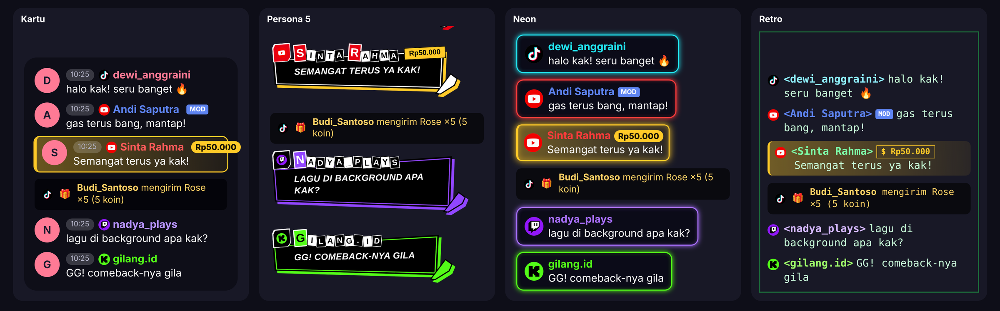
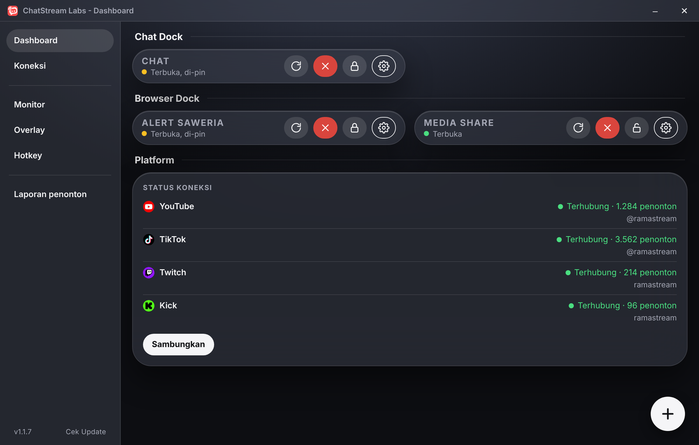
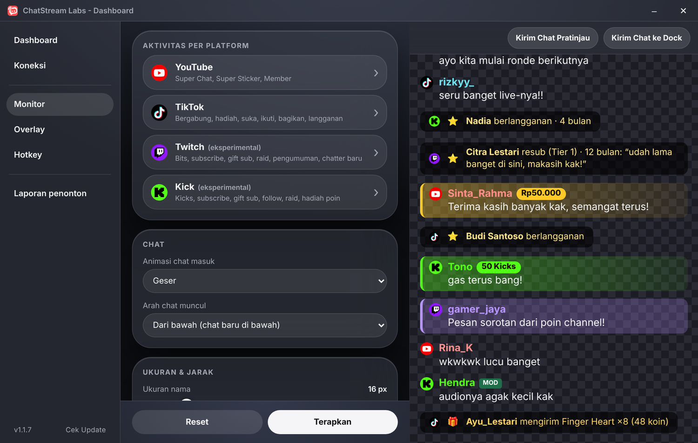
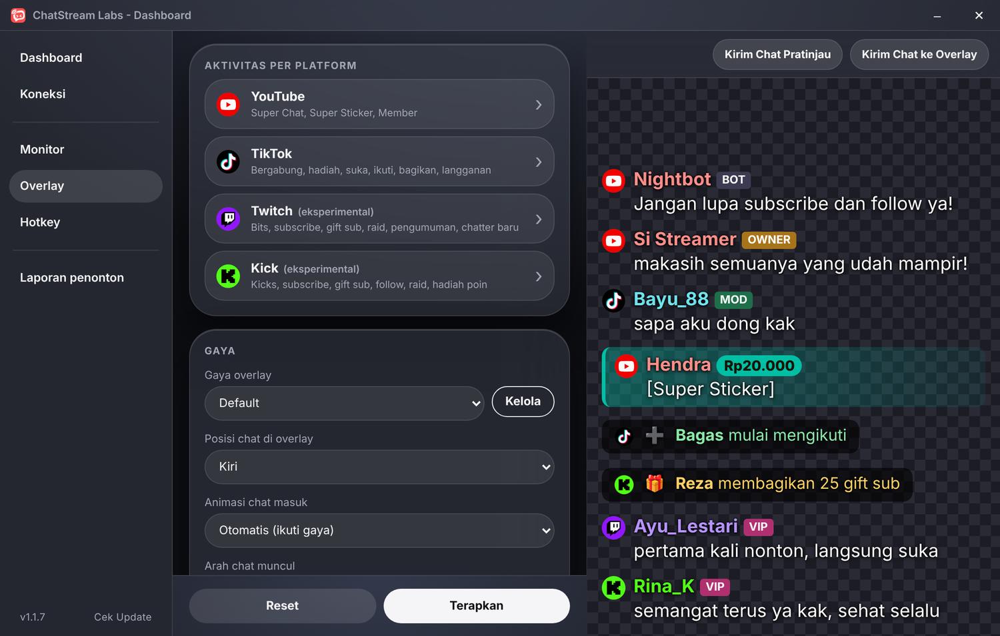

Gabungkan chat YouTube, TikTok, Twitch, dan Kick dalam satu jendela. Tampil rapi di atas game, dan siap dipasang di OBS.

Semua yang kamu butuhkan saat live, tanpa banyak tab dan jendela.
Kunci jendelanya dan chat jadi transparan dan tembus klik, jadi game tetap bisa kamu mainkan.
Pilih gaya, atur ukuran dan animasi, dan tambahkan ke OBS dengan satu klik.
Super Chat, hadiah TikTok, dan langganan tampil besar dengan warna yang kamu pilih.
Widget donasi seperti Saweria tampil di jendela sendiri di atas game, tanpa membuka Chrome.
Jendela pribadimu hanya terlihat olehmu, tidak oleh penonton.
Grafik penonton, puncak, rata-rata, chat, dan hadiah dari setiap sesi live.
Kartu, Persona 5, Neon, Retro, atau bikin gayamu sendiri dengan CSS. Pratinjaunya langsung berubah.

Buka dan tutup jendela, cek status tiap platform, dan atur tampilan chat dengan pratinjau langsung.


Monitor · chat pribadimu

Overlay · chat untuk penonton di OBS
Tampilan memakai nama dan chat contoh.
Download installer dari halaman Releases, lalu jalankan.
Isi username akun live kamu di tab Koneksi, lalu klik Sambungkan.
Buka jendela chat, atau tambahkan overlay ke OBS. Selesai.
Download versi terbaru dan mulai tampilkan semua chat-mu di satu tempat.
Download untuk WindowsBukan. Cara mengambil chat YouTube dan TikTok tidak resmi dan bisa berhenti bekerja sewaktu-waktu. Memakainya bisa melanggar ketentuan layanan platform, jadi pakai dengan risiko sendiri.
Aplikasi belum bertanda tangan digital, jadi Windows SmartScreen bisa memberi peringatan. Pilih More info lalu Run anyway kalau kamu percaya sumbernya.
Keduanya masih eksperimental dan belum diuji dengan live sungguhan, jadi kabari lewat GitHub kalau ada yang tidak jalan.
Ada fitur Kirim Chat lewat ekstensi Chrome. Fitur ini masih eksperimental dan bawaannya mati. Nyalakan di Dashboard, tab Koneksi.
Buka Dashboard lalu klik Cek Update di pojok kiri bawah.